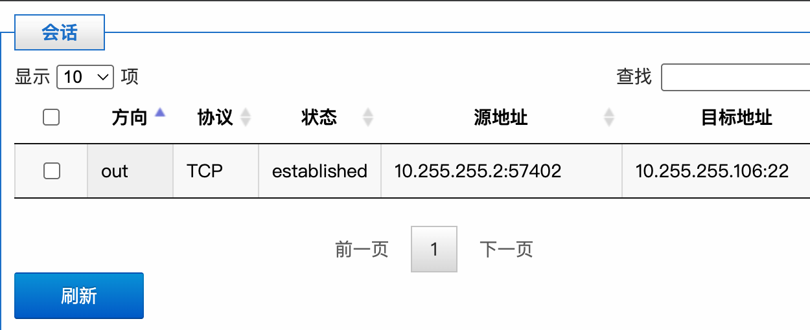

配置路径: "基础配置-会话"

说明:
| 方向 | in: 表示此条会话是从外界主动发起访问本机的. out: 表示此条会话是从本机发起的 |
| 协议 | 本条会话的协议, 常见协议如:TCP/UDP/ICMP等 |
| 状态 | TCP连接是有状态的, 如establish状态 |
| 源地址 | 连接发起方的地址和端口 |
| 目标地址 | 目标地址和端口 |
配置视图： config-view -> xnetc-view
使用示例:
xnetc-view>show session direction:in, state:established, protocol:TCP, sip:5.5.5.5:57336, dip:127.0.0.1:8890 direction:in, state:established, protocol:TCP, sip:6.6.6.6:57339, dip:127.0.0.1:8890
命令说明:
| show session | 显示会话 direction: 会话方向 state: 会话状态 protocol: 会话协议 sip: 访问者源IP和端口 dip: 目标服务器的IP和端口 |